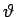
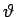

Bei der Einbindung örtlich bestimmter Punkte in eine Landeskarte ist die Transformation des örtlichen Systems y',x' in das Landessystem y,x erforderlich.
Das System y',x' ist gegen das System y,x um den Winkel  gedreht und um y0,x0 parallel verschoben. Die Richtungswinkel im System y',x' sind mit  bezeichnet. Gegeben sind die Koordinaten von A und B in beiden Systemen und die Koordinaten eines Punktes C im x',y'-System. Die Transformation erfolgt mit den folgenden Beziehungen:
gedreht und um y0,x0 parallel verschoben. Die Richtungswinkel im System y',x' sind mit  bezeichnet. Gegeben sind die Koordinaten von A und B in beiden Systemen und die Koordinaten eines Punktes C im x',y'-System. Die Transformation erfolgt mit den folgenden Beziehungen:
Hinweis: Die folgenden zwei Formeln können zur Probe verwendet werden.
Wenn die Strecke AB auf der x'-Achse liegt, vereinfachen sich die Formeln zu